BIODATA es una experiencia inmersiva e interactiva que vincula los sistemas naturales y principios
matemáticos, con énfasis en la espiral logarítmica como patrón geométrico recurrente en la morfogénesis
biológica.
A lo largo de cuatro escenarios temáticos, se exploran fenómenos donde la estructura, el crecimiento y
la dinámica de lo vivo responden a leyes matemáticas precisas. Cada espacio propone una interacción
sensorial y visual que permite comprender físicamente estas configuraciones autoorganizativas, revelando
cómo la matemática no solo describe la naturaleza, sino que la estructura desde sus niveles fundamentales.
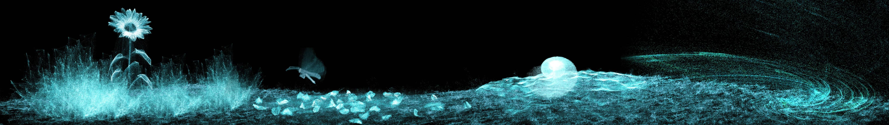
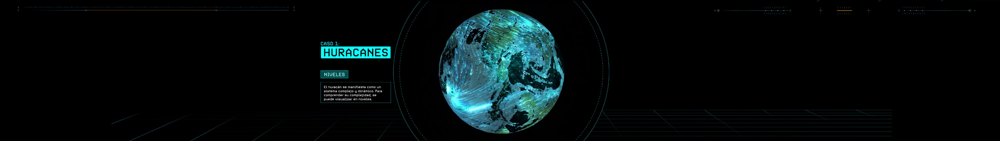
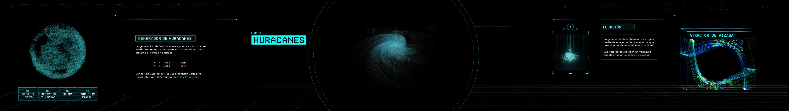
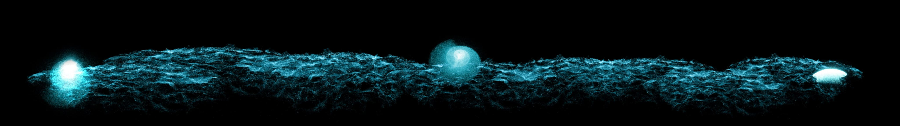
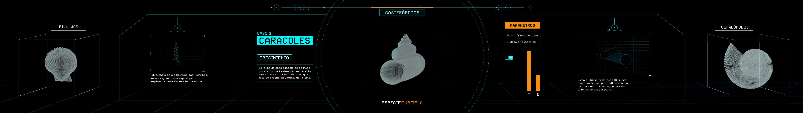
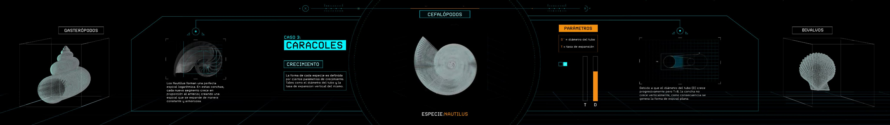
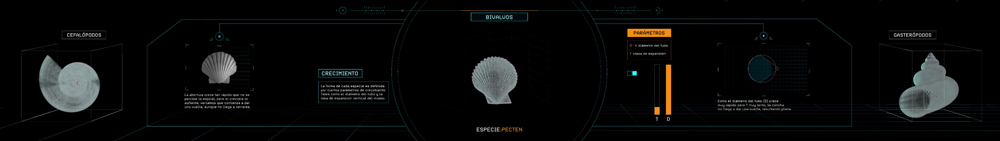
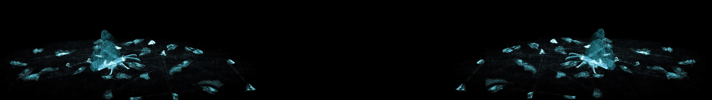
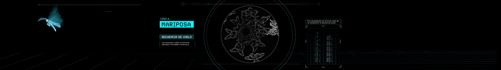
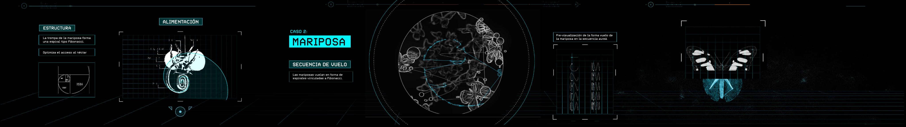
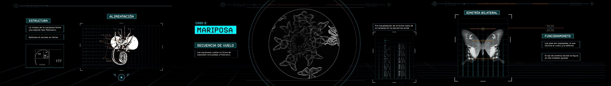
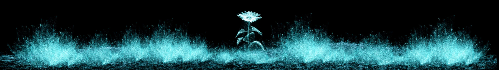
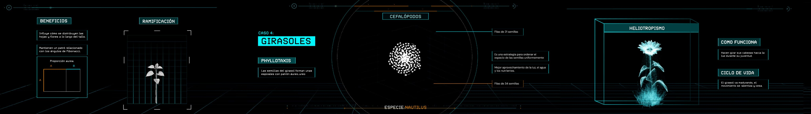
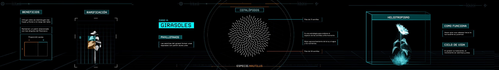